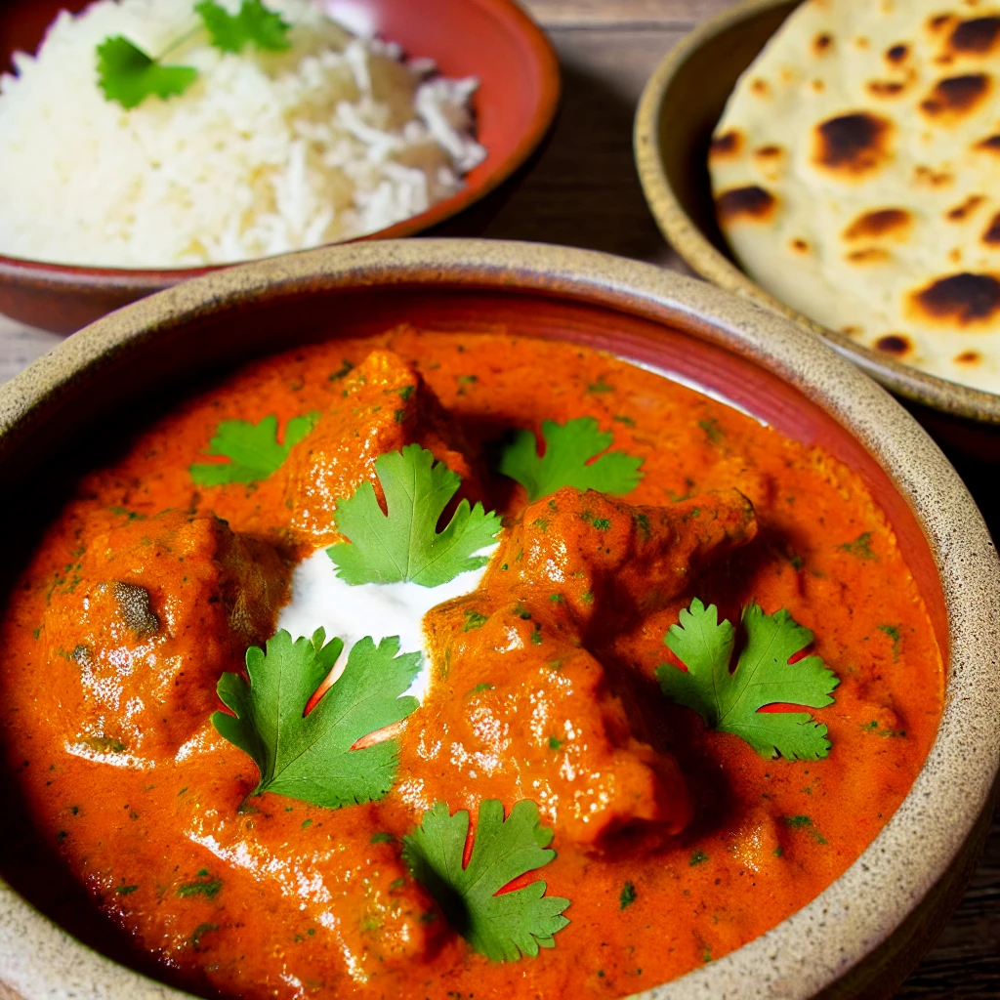

<!DOCTYPE html>
<html lang="nl-be">

<head>
  <meta charset="UTF-8">
  <meta name="viewport" content="width=device-width, initial-scale=1.0">
  <title>Receptionist Indiase Butter Chicken<< /title>
      <link rel="stylesheet" href="css/reset.css">
      <link rel="stylesheet" href="css/style.css">
      <link rel="stylesheet" href="css/map.css">

</head>

<body>
  <header class="flex-header">
    
    <h1>Receptionist</h1>
    <input type="search" placeholder="Zoeken">
  </header>
  <nav>
    <ul class="flex-menu">
      <li><a href="index.html">home</a></li>
      <li><a href="shop.html">shop</a></li>
      <li><a href="contact.html">contact</a></li>
    </ul>
  </nav>

  <aside class="aside-menu">
    <h2>Ingrediënten (voor 4 personen)</h2>
    <ol>
      <li>500g kipfilet (in blokjes gesneden)</li>
      <li>1 eetlepel plantaardige olie</li>
      <li>1 grote ui (fijngehakt)</li>
      <li>2 teentjes knoflook (fijngehakt)</li>
      <li>1 stuk verse gember (2 cm, geraspt)</li>
      <li>2 eetlepels garam masala</li>
      <li>1 theelepel kurkuma</li>
      <li>1 theelepel paprikapoeder</li>
      <li>400g tomatenblokjes (uit blik)</li>
      <li>150ml volle room</li>
      <li>50g ongezouten boter</li>
      <li>1 theelepel suiker</li>
      <li>Peper en zout naar smaak</li>
      <li>Verse koriander (voor garnering)</li>
      <li>300g basmatirijst (optioneel, voor erbij)</li>
    </ol>
  </aside>


  <main class="flex-main-product">
    
    <section>

      <h2>>Indiase Butter Chicken bereidingswijze:</h2>
      <ol>
        <li>Verhit de olie in een grote pan op middelhoog vuur. Voeg de kipblokjes toe en bak ze tot ze goudbruin zijn.
          Haal de kip uit de pan en zet apart.</li>
        <li>In dezelfde pan, bak de ui tot deze zacht en glazig is. Voeg de knoflook en gember toe en bak nog 1 minuut.
        </li>
        <li>Voeg de garam masala, kurkuma en paprikapoeder toe. Bak dit kort mee om de specerijen te laten geuren.</li>
        <li>Doe de tomatenblokjes en suiker erbij. Laat het geheel 10 minuten sudderen.</li>
        <li>Voeg de boter en room toe en roer tot de saus romig is. Breng op smaak met peper en zout.</li>
        <li>Doe de kip terug in de pan en laat nog 10-15 minuten sudderen tot de kip gaar is.</li>
        <li>Kook ondertussen de basmatirijst volgens de instructies op de verpakking.</li>
        <li>Garneer de Butter Chicken met verse koriander en serveer met rijst.</li>
      </ol>

      <h2>Geschatte prijs per persoon</h2>
      <p>Ongeveer €4,50 per persoon</p>
    </section>
  </main>

  <footer class="sticky-footer">

    <p>&copy;mijn website</p>
  </footer>
</body>

</html>